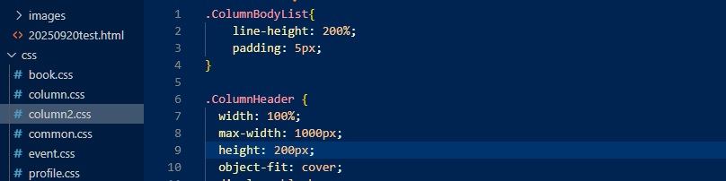

20250920テスト

重たい腰を上げて、webサイトを作った。これはテスト記事だ。
小学生くらいのとき、「ホームページ」という単語にあこがれた。当時は新進気鋭の技術である。windowsの「メモ帳」に手打ちでhtmlを書いて作っていた。けっこうハマって、中学から高校のときは友人や知人のホームページ制作代行を請け負うこともあった。あの頃はまだpixivがなかったと思う。絵がそこそこ上手くて人に見せたい願望のある子どもらは、わたしのような「ホームページだけ作りたいが中身のコンテンツを作る気はない人」と相性がよかったのだ。
このテスト記事では、そのときに多用していたpreタグというものを使っている。htmlを知らない人からしたらなんのこっちゃということだろうが、これはhtml要素のひとつで、<pre>～</pre>の間に挟んだ文章はスペースや改行をそのまま表示してくれる、というものだ。そう、本来なら、一行文章を書くごとに<br>やら<div></div>やらを打つ必要があるのだ。文章書きの観点からいうとそれは大層だるいので、書いたまま載せてくれる<pre></pre>タグを使うと便利なのだ。ただこれ、元々はプログラミング用のソースを示すのに使われているもので、文章を載せるのは不適切だというようなことも聞いたことがある。全部うろ覚えの知識だ。
そう、うろ覚えの知識しかなくても、なんとなく調べ方や体系が分かっていると理解しやすくなるものだ。このwebページを作る上で変わった要素をいろいろと見つけて、おもしろかった。あのときあんなに頼っていた<font></font>タグが無いなんて……。 昔はCSSだってページ内に直接埋め込んでいた気がするよ。それは小学生のわたしには難しすぎてできなかっただけの話かもしれないが……
とにかく、webページを久しぶりに作れてとても楽しい。
これで慣れていけるようであれば、わたしからのお知らせや日記はこちらに集約していきたい。
どうなるか自分でも楽しみ。